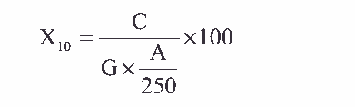

样品经酸分解后的溶液，在酸性溶液中，正磷酸盐与钼酸铵反应生成黄色的磷钼杂多 酸，再用抗坏血酸还原成磷钼兰。
1. 钼酸铵溶液。
称取 7.0g 钼酸铵（称准至 0.01g）溶于约 500mL 水中，加入 0.2g 酒石酸锑钾及 80mL
硫酸，冷却后，用水稀释至 1000mL，混匀，贮存于棕色瓶中。（ 有效期 6 个月）
2. 抗坏血酸溶液。
称取 17.6g 抗坏血酸（称准至 0.01g）， 溶于约 500mL 水中，加入 0.2g 乙二胺四乙酸二
钠及 8mL 甲酸，用水稀释至 1000mL，混匀，贮存棕色瓶中。（ 有效期 1 个月）
3. 五氧化二磷标准溶液。
称取 0.1917g 预先在 100～105℃下烘干的磷酸二氢钾 （ KH2PO4）溶于水中，移入 1000mL
容量瓶中，用水稀释至刻度，混匀，此溶液 1mL 含 0.1mg 五氧化二磷（ P2O5）。
1. 分光光度计。 2. 电炉。
1. 标准曲线的绘制
分别吸取 1mL 含 0.1mg 五氧化二磷标准溶液 0.1、 0.3、 0.5、 0.7、 0.9mL 于 5 只 50mL
容量瓶中，依次向各瓶加入约 25mL 水及 5mL 钼酸铵溶液，摇匀，再加入 3mL 抗坏血酸溶
液，用水稀释至刻度，摇匀，室温下放置 10 分钟，用分光光度计，于 710nm 处，用 1cm 比
色皿，以水空白作参比，测其吸光度。用测得吸光度为纵坐标，相对应的五氧化二磷（ P2O5）
含量（毫克）为横坐标绘制标准曲线。
2. 试样的测定
吸取测定酸不溶物后滤液 0.5～5mL，于 50mL 容量瓶中，加约 20mL 水及 5mL 钼酸铵
溶液， 3mL 抗坏血酸溶液，用水稀释至刻度，摇匀，室温下放置 10 分钟，于 710nm 处，用
1cm 比色皿，以水空白作参比，测其吸光度。于标准曲线上查得相应的五氧化二磷含量。
五氧化二磷含量 X10（ %）， 按下式计算：

式中： C——从标准曲线上查得五氧化二磷含量，毫克；
G——试样的重量，克；
A——吸取测定酸不溶物后溶液的体积，毫升。
平行测定两结果不大于 0.2%。
取平行测定两结果的算术平均值，作为垢样中五氧化二磷的含量。